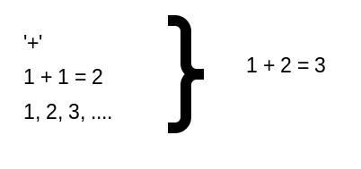

Wie heeft er wel eens gehoord van Kunstmatige Intelligentie? Eigenlijk moeten we eerst vaststellen wat ‘intelligentie’ is. Onder menselijke intelligentie kan vallen:

Problemen oplossen: voorbeeld: aan iemand in de groep vragen om aan de hand van ja/nee-vragen een getal onder de 1000 te achterhalen. → Vragen als ‘is het 1,2,3,4,..?’ is niet intelligent, maar vragen als ‘ligt het boven de 500?’ wel.
Communiceren
Bij Kunstmatige Intelligentie proberen we computerprogramma's te maken waarin deze aspecten terugkomen. We proberen dus een ‘intelligent’ computerprogramma te maken.